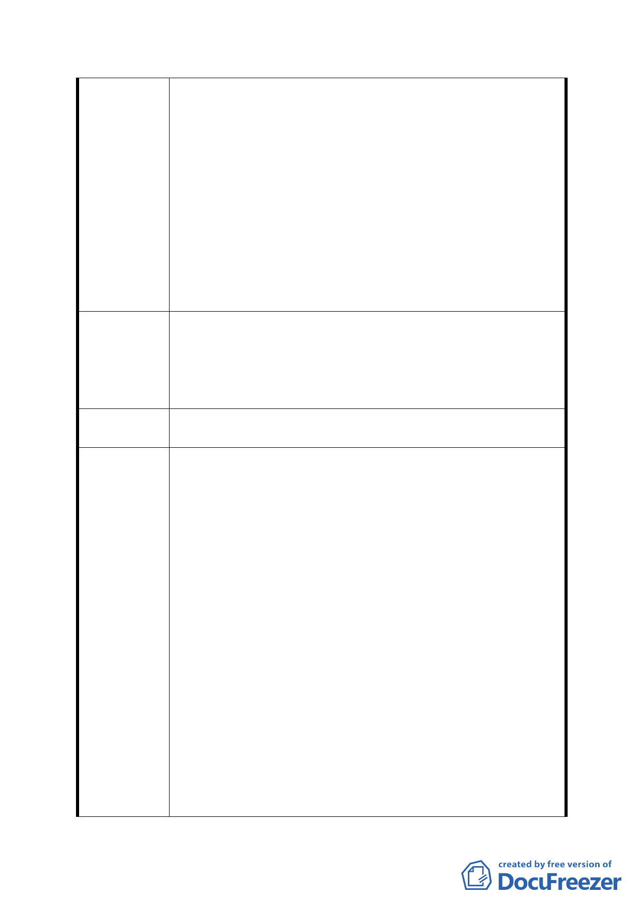

虫聚集及開放空間造成人員複雜，何來改善地區環境，
提升都市生活品質之說？
八、『計畫區扣除防洪調節池用地及機關用地，剩餘土地平
均坡地超過30﹪土地，變更為保護區…』為何在學校用
地計畫時無此規劃？況且其今建築技術更勝當年。再者
保護區是保護何者？若為軍方營舍，則宜列入機關用
地；若為上方之公訓中心，則應列為機關用地；若為水
土保持，則應列為護坡用地或公園用地。
九、綜觀此公展計畫，僅為捉襟見肘，並非當地現況之最佳
計畫；當地居民皆依政府計畫辛亥國小、國中及高中之
願景而置產，如今撤銷學校用地計畫，其損失如何求
償？
建議：
一、 本案與對面之公園預定地通盤檢討，以維當地居民最
建議辦法
大福祉。
二、 如公權力無法帶動當地發展，則應全盤開放為住宅或
商業用地而由民間投資。
第五次專案小組
審查結論
同編號 1
1.陳情人申請發還被徵收土地之審查作業程序及退還土地
增值稅，係依土地法第 219 條規定及內政部 88 年 1 月 30
日台（88）內地字第 8892188 號函及財政部 88 年 2 月 12
日台財稅字第 881900459 號函釋（略以：發還土地予原土
地所有權人之情事，屬另一次移轉行為，前已繳納之土地
增值稅應不予退還）辦理。
2.陳情人於 86 年申請買回土地，87 年辦竣「發還」登記（當
時 73 及 77-1 地號土地，本市府持分 8/15，陳情人買回後
市府修正後
回應說明
登記持分 1/15），主張本市持有土地期間，土地遭本府相
關單位興建道路、擋土牆及架設路燈、劃設停車格線等造
成回復所有權後無法有效行使管理使用權乙節，係本府相
關單位於土地發還前於既成道路上本於職權興建擋土
牆、裝設路燈及繪製停車格線，該停車格已塗銷，既成道
路則依現況使用。
3.本防洪調節池位址屬於高地，不屬於易積淹水地區，然其
下游地區(興隆路與辛亥路口、興隆路與興德路口、興德
路、福興街等)皆屬易積淹水地段，經查近 10 年來發生積
水事件紀錄約 40 筆，其中屬於興隆路與辛亥路雨水下水
道系統內約 13 次，如興德路於 93 年曾積水 50cm、興隆
- 19 -